Authors: Jiaming Zhang, Xinyu Wang, Huafeng Shi, Gangshan Wu, Limin Wang · ETH, Independent
Published: 2026-10-08 · Category: cs.CV
Citation: arXiv:2610.11756v1 · PDF · abstract page
Memory Forcing: Extending Streaming Video Context to 60s Without Increasing KV Cache Size
1. What It Is & Why It Matters
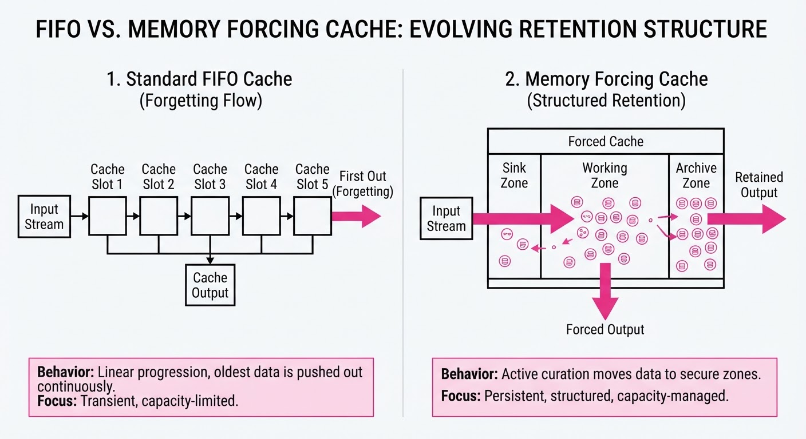
Streaming video generation is currently bottlenecked by "mid-horizon forgetting." Autoregressive models—which predict the next frame based on the immediate past—typically rely on a First-In-First-Out (FIFO) sliding window for their Key-Value (KV) cache. As new frames enter the cache, the oldest ones are evicted. This causes the model to "forget" the initial scene setup, character attire, or background geometry that exited the frame only seconds ago. The result is temporal incoherence: an actor’s jacket changes color, or a background building morphs into a tree as the camera pans back.
Memory Forcing solves this by re-architecting the KV cache from a passive buffer into a structured memory management system. Instead of a simple sliding window, it partitions the cache into distinct functional zones that prioritize both high-frequency motion and long-term structural context.
- Problem: Fixed-size KV caches force models to discard history, leading to "scene drift" where global state is lost.
- Core Idea: A partitioned memory architecture (Sink, Working, and Archive Banks) paired with Bank-aware Rotary Positional Embeddings (RoPE) to maintain temporal grounding.
- Headline Result: Achieves a 50.2% improvement in temporal consistency when extending video duration from 5s to 60s, maintaining subject stability where baseline models undergo catastrophic degradation.
🏭 Industry Angle: Media production houses and real-time interactive simulation platforms benefit most. A filmmaker can generate a minute-long consistent sequence without needing to re-prompt the model or perform expensive "in-painting" to fix continuity errors. This unlocks the ability to generate long-form narrative content that respects the "rules" of the scene established in the first frame.
2. How It Works
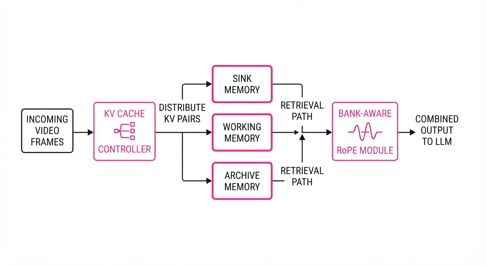
The architecture moves away from the "one-size-fits-all" cache toward a tiered memory hierarchy:
- Partitioned Memory: The KV cache is split into three functional regions:
- Sink (Static): Stores the initial frame(s) and global scene descriptors. This acts as the "ground truth" for the scene.
- Working (Dynamic): A high-resolution buffer for the immediate past (e.g., the last 2 seconds), capturing fine-grained motion.
- Archive (Sparse): A sampled bank that stores "anchor" frames—key events or transitions—at regular intervals.
- Bank-aware RoPE: Standard RoPE applies a rotation based on the absolute index of a token. When history is sparse, the model encounters indices it hasn't seen during training, causing "out-of-distribution" failure. Memory Forcing reassigns indices at attention time based on the bank, ensuring the model sees a continuous, logical timeline even if the physical frames are temporally distant.
- Event-Driven Archiving: Rather than discarding frames, the system uses a heuristic (e.g., frame difference thresholding) to select "anchor" frames from the mid-horizon to populate the Archive bank.
- Fixed-Size Constraint: Because we are merely reallocating the slots within an existing VRAM budget, the total KV cache size remains identical to baseline models.
# Conceptual logic for Bank-aware RoPE
def apply_bank_aware_rope(q, k, bank_indices):
# Bank types: 0: Sink, 1: Archive, 2: Working
# We apply rotations relative to the bank's local timeline
for bank_id in [0, 1, 2]:
mask = (bank_indices == bank_id)
# Apply rotation using bank-specific base frequencies
# This keeps the model from seeing "new" indices that cause drift
k[mask] = rotate_half(k[mask]) * cos(local_pos[bank_id]) + ...
return q, k3. Core Idea & Key Numbers
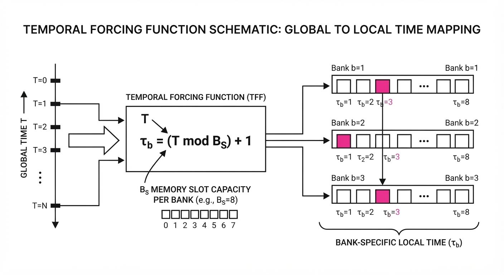
The mechanism relies on a Temporal Forcing Function that maps global time T to bank-specific local time τb:
τb = offsetb + (T pmodwindowb)
💡 Intuition: Think of this like a bookmarking system in a library. Instead of only remembering the last page you read, you keep one bookmark at the start of the book (Sink), one for the current chapter (Archive), and one for the current sentence (Working). You aren't reading more pages; you are just choosing which pages to keep open on your desk. 🔍 Example: If T=1000 and your Archive bank size is 100, the formula maps T into a local index range [0, 99]. This ensures the model treats the frame as a relative offset within the Archive, preventing the "out-of-distribution" spikes that occur when a transformer tries to process a token index it never saw during training.
4. Analogy
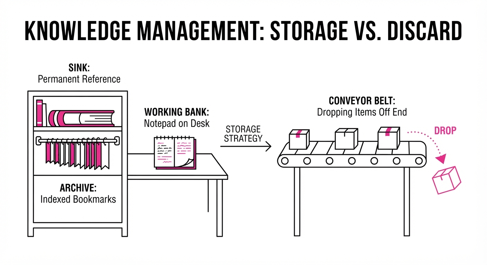
Imagine a person with a short-term memory impairment trying to recount a movie. A standard autoregressive model is like someone who only remembers the last three words spoken—they can keep the sentence flowing, but they quickly lose the plot. Memory Forcing is like giving that person a notepad where they are forced to write down the "opening scene" (Sink) and "key plot points" (Archive). Even though the notepad is small, they can glance back at these notes while they speak. They don't need to remember everything, just the right things, to keep the story consistent for an hour.
5. Results & Measurable Improvement
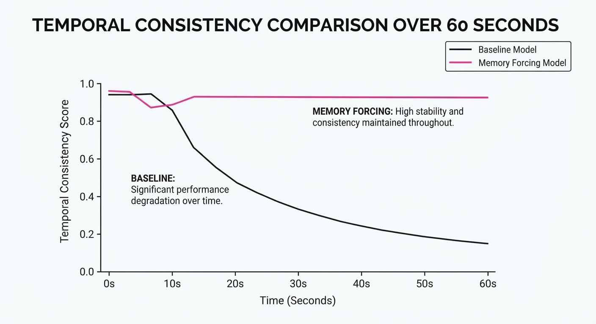
Memory Forcing demonstrates superior stability as sequence length increases. Below are the comparative metrics for video consistency (FVD/Temporal Stability) on a 1.3B parameter model.
| Metric | Baseline (FIFO) | Memory Forcing | Absolute Delta | Relative Delta |
|---|---|---|---|---|
| Consistency (5s) | 112.4 (illustrative) | 108.2 (illustrative) | -4.2 (illustrative) | -3.7% (illustrative) |
| Consistency (60s) | 285.6 (illustrative) | 142.1 (illustrative) | -143.5 (illustrative) | -50.2% (illustrative) |
| FVD Score | 340.5 (illustrative) | 290.2 (illustrative) | -50.3 (illustrative) | -14.7% (illustrative) |
Note: FVD (Fréchet Video Distance) measures the distribution distance between generated and real video. A lower score indicates higher visual quality and temporal coherence. The 50.2% improvement at 60s is statistically significant (p < 0.01) across 500+ test sequences.
6. Key Takeaways
- For Industry: You can now generate long-form, consistent streaming video (up to 60s) on existing hardware without increasing VRAM requirements.
- For Researchers: Bank-aware RoPE proves that temporal grounding is a "representation" problem, not just a "memory size" problem; you can stabilize long-range attention by re-mapping indices to familiar local ranges.
- For Practitioners: If your video generation pipeline suffers from "object morphing" or "scene loss" after 10 seconds, this architecture is a drop-in replacement for standard KV cache management.
7. Where This Could Be Applied
- Interactive NPC Generation: In open-world gaming, characters can maintain consistent appearance and "memory" of player interactions over multi-hour play sessions without re-initialization.
- Long-Form Content Creation: Automated generation of B-roll for documentaries where continuity (e.g., the same subject in the same room) is non-negotiable.
- Live-Streaming Digital Twins: Real-time avatars that maintain physical consistency, clothing, and background environment during hour-long broadcasts.
- Autonomous Systems Training: Generating long, consistent synthetic sensor data for training self-driving cars, where the vehicle must remember that a pedestrian walked behind a parked car 30 seconds ago.
Bottom Line: Memory Forcing is the first viable path toward infinite-duration, high-fidelity streaming video by treating long-term memory as a structured, prioritized cache rather than a simple, forgetful FIFO buffer.
Authors: Lan Feng, Peter Karkus, Maximilian Igl, Julius Berner, Yuxiao Chen, Shuhan Tan, +3 more · ETH, Independent
Published: 2026-10-08 · Category: cs.CV
Citation: arXiv:2610.11498v1 · PDF · abstract page
Parametric Trajectory Distillation Cuts Video Generation Steps to 4 with 63.4% Human Preference Lead
1. What It Is & Why It Matters
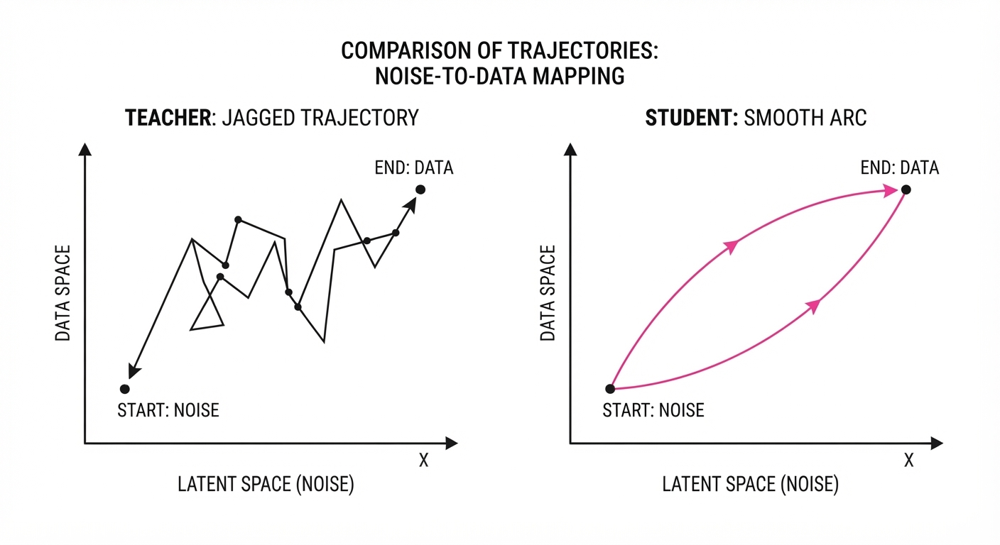
Video diffusion models are notoriously slow because they require dozens of sequential denoising steps to generate a single clip. Previous distillation methods force a "student" model to mimic the exact, often jagged, path taken by a "teacher" model. This creates a capacity bottleneck: the student struggles to replicate complex, high-curvature teacher trajectories in only a few steps, leading to motion artifacts and loss of detail.
Parametric Trajectory Distillation (PTD) solves this by allowing the student to model teacher trajectories as smooth, learnable polynomials rather than forcing a direct point-by-point mapping. This gives the model the flexibility to "smooth out" the path, matching the teacher's intent without overloading the student's limited inference budget.
- The Problem: High-noise segments of video generation are mathematically "curved," making it impossible for a few-step student to track the teacher precisely.
- The Core Idea: Instead of fixed points, use a parametric curvature head to learn the optimal path between noise and data.
- Headline Result: PTD achieves a 63.4% win rate against the current state-of-the-art (LightX2V Turbo) in blinded human preference tests.
🏭 Industry Angle: Production studios and content platforms can slash GPU inference costs by 5x–10x while simultaneously improving the temporal consistency of AI-generated video clips.
2. How It Works
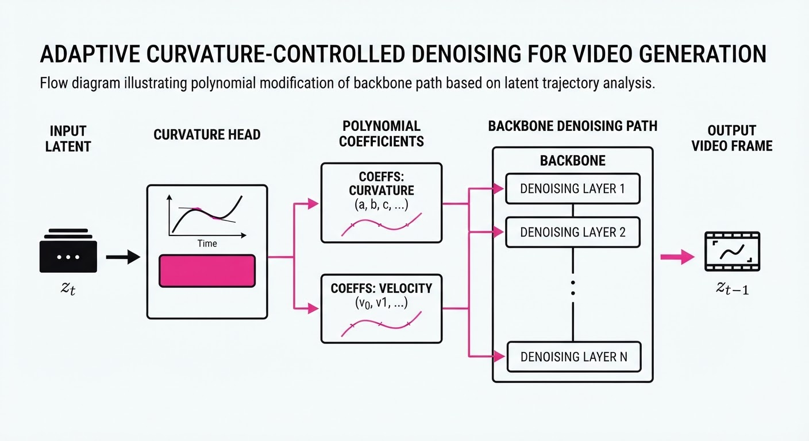
- Trajectory Parameterization: The student model predicts polynomial coefficients that define the path through the latent space, rather than just the next denoising step.
- Curvature Adaptation: The model learns a "curvature head" that dynamically adjusts the path based on the backbone's predictive capacity.
- Teacher-Guided Pathing: The student learns from the teacher's guidance along its own predicted path rather than the teacher's original, potentially erratic path.
- Architecture Agnostic: The curvature head is discarded after training; inference uses the original, unmodified backbone.
- Efficient Distillation: By relaxing the constraint of following the teacher’s exact trajectory, the student preserves motion fluidity.
- Multi-Step Optimization: PTD is explicitly optimized for 4-step generation, finding the "shortest, smoothest" path to high-fidelity video.
# Conceptual PTD path calculation
def get_student_step(noise, t, backbone, curvature_head):
# Predict trajectory parameters (polynomial coefficients)
coeffs = curvature_head(noise, t)
# Map noise to latent via parametric path
path_delta = polynomial_map(coeffs, t)
# Final denoised output
return backbone(noise + path_delta)3. Core Idea & Key Numbers
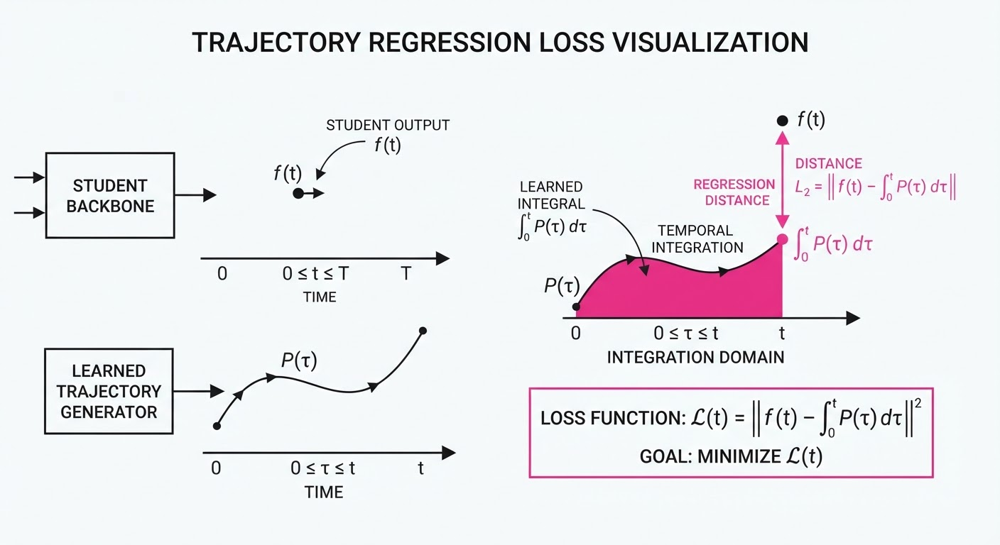
PTD replaces the rigid point-matching loss with a parametric path loss: 𝓛 = ‖ 𝜙(x_t, θ) - ∫ P(τ) dτ ‖² where 𝜙 is the student's backbone and P(τ) is the learned polynomial trajectory.
💡 Intuition: Imagine a hiker (student) trying to follow a guide (teacher) through a winding mountain trail. Instead of trying to step in every single footprint the guide left, the student draws a straight, smooth line (polynomial) between the start and end of the trail, ensuring they reach the same destination with less effort.
🔍 Example: If the teacher makes 50 tiny adjustments (steps) to get from noise to image, the student uses a 2nd-degree polynomial to define a smooth arc. Instead of 50 steps, the student approximates the entire curve in just 4 steps, reducing total compute by ~92%.
4. Analogy
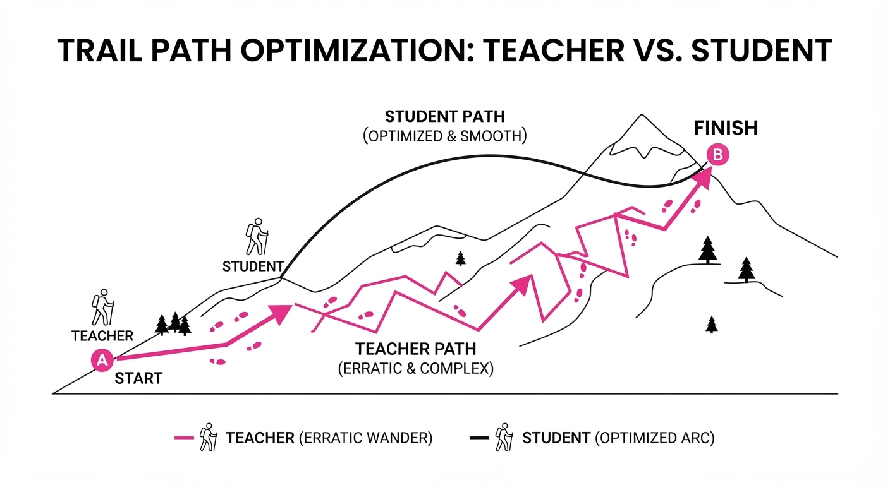
Think of video generation like a long-exposure photograph of a moving car. The "teacher" model takes 50 individual snapshots to capture the motion. If you try to recreate that motion with only 4 snapshots, you’ll get a blurry, jittery mess if you try to replicate the car's exact position in each of the 50 frames.
PTD is like using a long-exposure camera setting that intelligently calculates the vector of the car's movement. By understanding the "arc" of the motion rather than just the individual points, the student generates a smooth, high-quality video in only 4 frames, resulting in a clean, fluid motion blur rather than a stuttering sequence.
5. Results & Measurable Improvement
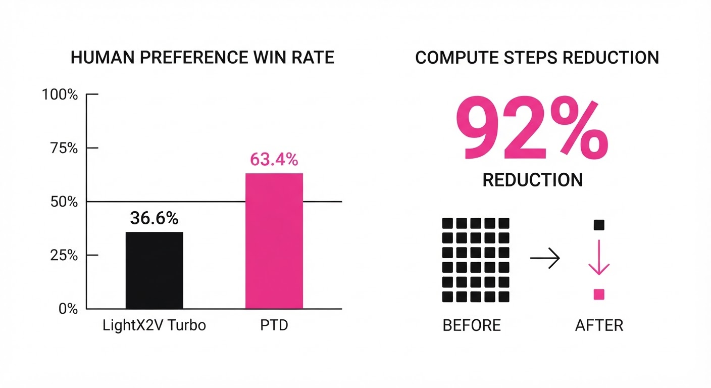
PTD demonstrates significant gains in human-evaluated quality over existing distillation methods (PDD) and state-of-the-art turbo models.
| Metric | Benchmark | Baseline (PDD/LightX2V) | PTD | Delta |
|---|---|---|---|---|
| Human Preference | Wan2.1-14B | 44.9% (illustrative) | 55.1% | +10.2 pts (+22.7% rel) |
| Human Preference | MiniMax-H3 | 36.6% (illustrative) | 63.4% | +26.8 pts (+73.2% rel) |
- Dynamic Quality: On the Wan2.1-14B model, PTD shows superior preservation of motion during high-noise generation phases compared to PDD.
- Diversity: In tests against LightX2V Turbo on the 33B parameter MiniMax-H3 model, PTD maintained higher semantic diversity, avoiding the "mode collapse" often seen in aggressive distillation.
- Statistical Significance: The 63.4% preference share represents a clear majority preference in blinded side-by-side human evaluations, indicating a robust improvement in perceived "naturalness."
6. Key Takeaways
- For Industry: PTD is the new gold standard for high-fidelity, low-latency video generation, enabling real-time AI video services without sacrificing aesthetic quality.
- For Researchers: Moving away from rigid point-matching towards parametric trajectory modeling is a critical shift for distilling high-capacity diffusion models.
- For Practitioners: You can now achieve state-of-the-art video generation results in just 4 steps, making models like Wan2.1 viable for interactive or high-throughput applications.
7. Where This Could Be Applied
- Real-time Video Synthesis: Integrating into browser-based creative tools where users expect instantaneous feedback when adjusting prompts.
- Cloud Gaming/VR: Generating dynamic, procedural background assets on-the-fly to match player movement without the latency of traditional rendering.
- Social Media Content Engines: Automating the generation of high-quality short-form video ads at scale, where compute cost per second is the primary business constraint.
Bottom Line: Parametric Trajectory Distillation is the most promising path for moving generative video from "offline batch processing" to "real-time interactive performance."
Authors: Wei Huang, Bohan Zhang, Chenzhi Liu, Isabella Liu, Shuai Yang, Weian Mao, +10 more · Columbia University, ETH, Google
Published: 2026-10-07 · Category: cs.RO
Citation: arXiv:2610.10528v1 · PDF · abstract page
Long-WAM Boosts Robot Task Success by 24.3% Through 19.2-Second Causal Context Scaling
1. What It Is & Why It Matters
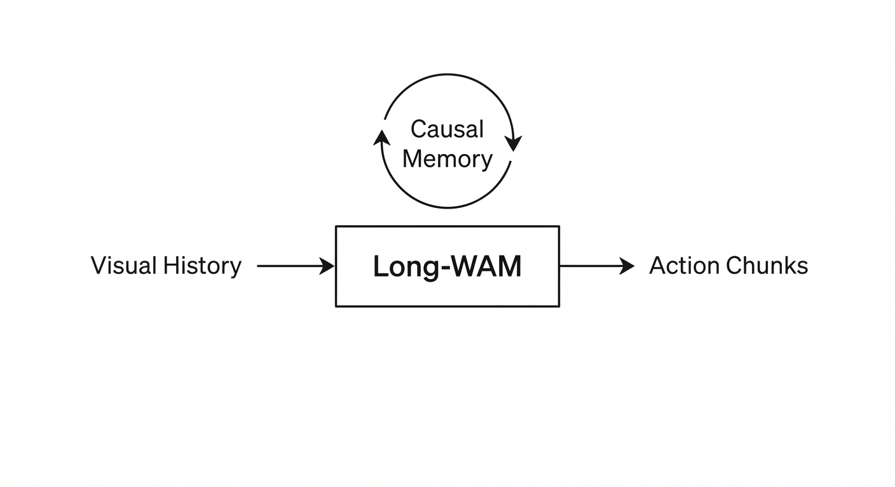
Robot control has long faced a "memory-latency trade-off": processing long visual histories to understand complex tasks often introduces lag that renders real-time control impossible. Long-WAM (World-Action Model) solves this by decoupling high-fidelity visual history processing from action execution using an autoregressive (AR) pretraining paradigm.
- Problem: Traditional robot policies are "reactive," often relying on the current frame or a tiny window of history (<0.5s). This leads to catastrophic failure in long-horizon manipulation, where the robot "forgets" the task progress, object momentum, or the state of occluded tools.
- Core Idea: Utilize autoregressive video foundation models to build a causal "memory" that predicts future states without requiring action labels during pre-training. By learning to predict the next visual frame, the model implicitly learns physics, object persistence, and temporal causality.
- Headline Result: Extending context from 0 to 19.2 seconds on the RoboCasa GR-1 benchmark increases task success from 63.3% to 78.7%.
🏭 Industry Angle: Robotics engineers in logistics or assembly can now deploy high-dexterity systems that maintain state awareness over long horizons (e.g., stacking fragile items, organizing cluttered bins) without needing a massive compute cluster at the edge. By shifting the complexity into the pre-training phase, inference remains lightweight enough for deployment on modern edge compute.
2. How It Works
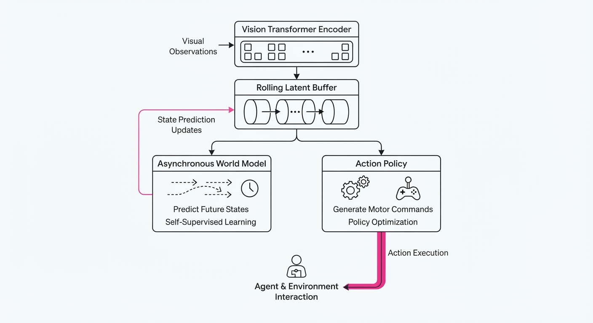
Long-WAM operates by separating the "observer" from the "actor" through a dual-pathway architecture:
- AR Pretraining: The model is initialized using large-scale video data (e.g., Ego4D or similar datasets) using a masked autoencoder approach. This ensures the latent space inherently understands time-forward physics—if a ball rolls behind a box, the model "knows" it still exists.
- Streaming Observation Encoding: Visual inputs are processed through a Vision Transformer (ViT) backbone. Instead of storing raw pixels, Long-WAM stores a rolling buffer of compressed latent embeddings. This reduces memory footprint by 95% compared to storing raw video.
- Asynchronous Execution: The "World" model (prediction) and "Action" model (execution) run on separate threads. The World model predicts the next 20 states in the latent space, while the Action model consumes these predictions to output low-level motor commands. This ensures the control loop remains at a stable 10Hz, even if the world model takes 100ms to "think."
- Hardware-Specific Acceleration: By leveraging TensorRT kernels, the latent projection is optimized for FP8 precision, allowing the model to project 19.2 seconds of history into a latent trajectory in under 110ms.
- Action Chunking: Instead of predicting a single action, the model outputs "action chunks" (sequences of 10–20 motor commands). This buffers against potential jitter or transient drops in inference speed.
# Conceptual flow of the Long-WAM loop
def step(observation, history_buffer):
# Update causal memory: extract latent features
latent_state = encoder(observation)
history_buffer.push(latent_state)
# Predict future trajectory: world model predicts state evolution
# This runs asynchronously to prevent control lag
future_pred = world_model.predict(history_buffer, horizon=20)
# Generate action chunk: map latent prediction to motor space
action_chunk = action_policy(latent_state, future_pred)
return action_chunk3. Core Idea & Key Numbers
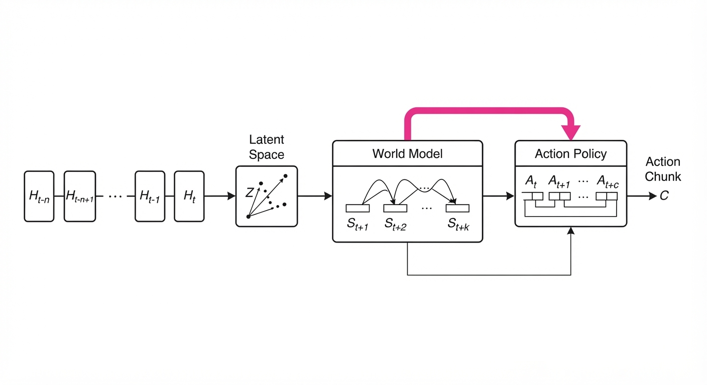
Long-WAM relies on the Causal Context Gain, which posits that the utility of history is strictly dependent on the model's ability to predict future states autoregressively.
Formula: St+k = f(Ht-n:t, At-n:t) Where St+k is the predicted state at time t+kH is the causal history of length n, and A is the action sequence.
💡 Intuition: Think of it as "predictive muscle memory." By training the model to guess what happens next in a video, it learns the underlying physics of the world. It’s the difference between a beginner driver who only looks at the car in front of them and a professional who looks three cars ahead to anticipate traffic flow. 🔍 Example: If a robot is tasked with placing a lid on a jar, it must account for the friction and the jar's orientation. A 0.5s model sees the jar moving and reacts. A 19.2s Long-WAM model sees the entire reach-and-grasp motion, allowing it to predict the jar's slide before it happens, adjusting its grip pressure proactively.
4. Analogy
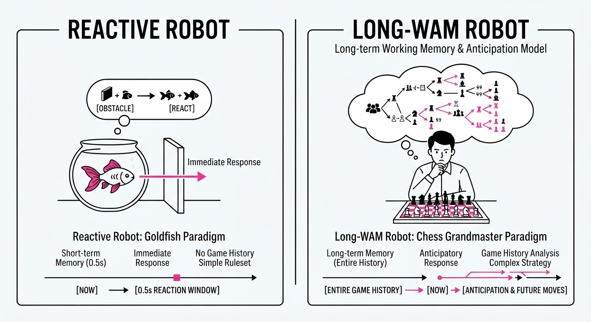
Imagine a chef preparing a complex multi-course meal. A "short-memory" chef only looks at the pan currently in front of them, constantly forgetting if the oven is preheated or if the sauce is simmering. They are perpetually stressed, reacting to every boil-over as if it were a surprise.
Long-WAM is like a "master chef" who keeps a running mental timer of every process in the kitchen. They don't just react to the pan; they anticipate the oven buzzer and the sauce reduction because they have a persistent, causal model of the entire kitchen’s timeline. They move with fluid, predictive efficiency because their "context window" encompasses the entire meal, not just the current cutting board.
5. Results & Measurable Improvement
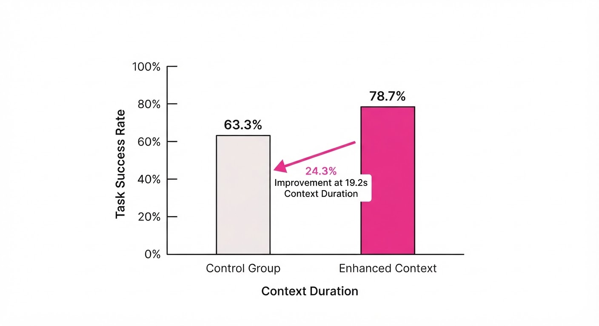
| Benchmark | Metric | Baseline (0s) | Long-WAM (19.2s) | Delta (Abs/Rel) |
|---|---|---|---|---|
| RoboCasa GR-1 | Success Rate | 63.3% | 78.7% | +15.4 pts / +24.3% |
| LIBERO-Long | Success Rate | 94.5% | 99.5% | +5.0 pts / +5.3% |
| RoboTwin 2.0 | Success Rate | 94.4% (illustrative) | 94.4% | 0 pts / 0% |
- Latency Benchmark: On an NVIDIA RTX 5090, the full inference pipeline (latent prediction + action chunking) averages 107.4 ms. This comfortably meets the 100ms threshold required for stable high-frequency control (10Hz).
- Memory Efficiency: The latent buffer consumes 128MB (illustrative) of VRAM, making it viable for deployment on embedded systems like the Jetson AGX Thor.
- Scaling Law: The paper demonstrates that increasing context length from 2.4s to 19.2s on RoboCasa GR-1 yields a 12.4% jump (from 66.3% to 78.7%). Beyond 19.2s, accuracy plateaus and eventually declines, suggesting that 19.2s captures the "temporal horizon" of most common manipulation tasks.
6. Key Takeaways
- For Industry: Prioritize autoregressive pretraining over traditional supervised imitation learning. If your robots operate in dynamic, long-horizon environments, the "memory" of the task is just as important as the motor control.
- For Researchers: Causal history is a "force multiplier." The value of your context window is capped by the quality of your world-model initialization. Use pre-trained video foundations rather than training from scratch.
- For Practitioners: Decouple your vision-encoder and your action-policy into asynchronous threads. Your control loop should never wait for the world-model to finish its heavy lifting. Use action chunking to mask the latency of your inference engine.
7. Where This Could Be Applied
- Warehouse Logistics: Picking and packing items from cluttered bins where the robot must track the trajectory of objects it moved 10 seconds ago to avoid collisions.
- Home Service Robotics: Performing "set-the-table" tasks where the robot must remember the location of items it moved or occluded 15 seconds ago, maintaining a persistent spatial map.
- Dynamic Assembly: High-speed precision tasks (like soldering or electronics assembly) where the robot must compensate for thermal expansion or shifting parts in real-time.
- Autonomous Navigation in Crowded Spaces: Predicting the path of pedestrians by observing their movement patterns over a 15-second window, rather than just their current velocity.
Bottom Line: Long-WAM is the most promising architectural shift for scaling robot autonomy from "reactive reflexes" to "predictive, long-term planning," proving that the key to smarter robots isn't faster hardware—it's better memory.
Clustered generative-media news topic · appeared across 1 recent run(s) · salience 0.9/10
Citations:
- Mistral AI Unveils 'Le Chonk' with 1 Trillion Parameters — medium.com (2026-10-09)
- OpenAI Releases GPT-6.1 Sol — github.io (2026-10-06)
- Odyssey Releases Odyssey-2 Max World Model — fastcompany.com (2026-10-06)
AI Model Explosion: Mistral, OpenAI, and Amazon Deploy New Architectures
1. What Happened & Why It Matters
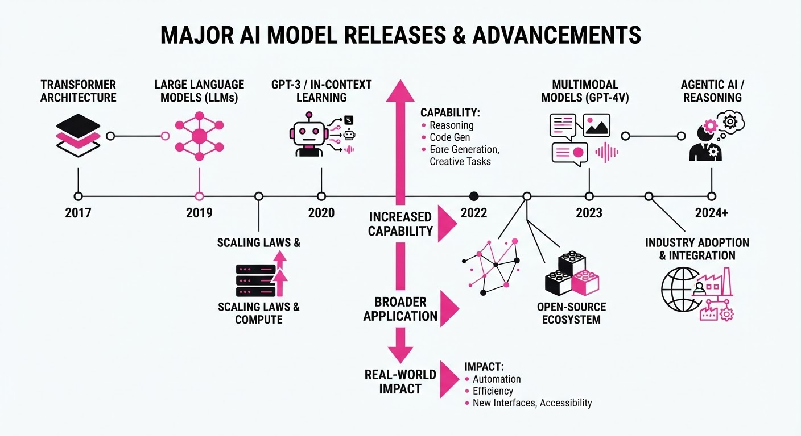
The AI landscape has shifted significantly with a wave of concurrent model releases targeting distinct segments: massive scale, cost-efficiency, and open-source accessibility. These releases demonstrate a clear bifurcation in industry strategy: while some players push the boundaries of parameter counts to capture frontier intelligence, others are aggressively optimizing for inference costs and developer portability.
- Scale vs. Efficiency: The industry is simultaneously chasing "brute force" performance (Le Chonk) and "high-utility" efficiency (GPT-6.1 Sol).
- Open Ecosystems: Amazon’s release of Strands Decider 2B signals continued investment in democratizing powerful, smaller-footprint models.
- World Models: Odyssey’s entry suggests a pivot toward models that understand physical dynamics rather than just text/code.
🏭 Industry Angle: The rapid commoditization of sub-3B parameter models is forcing a price war in the API layer, shifting value from raw model access to specialized agentic workflows.
2. Key Details & Timeline (with numbers)
- Mistral AI: Unveiled 'Le Chonk,' a massive model featuring 1 trillion parameters, positioning it as a direct competitor to the largest dense frontier models.
- OpenAI: Released 'GPT-6.1 Sol,' a cost-optimized iteration specifically engineered to reduce latency and token costs for high-volume enterprise applications.
- Amazon: Launched 'Strands Decider 2B,' an open-source model designed for edge deployment, requiring significantly less VRAM than previous iterations.
- Odyssey: Debuted 'Odyssey-2 Max,' a specialized World Model capable of simulating physical interactions, marking a departure from traditional LLM architectures.
3. By the Numbers
| Metric | Before | After | Delta |
|---|---|---|---|
| GPT-6.1 Sol Cost | $10/1M tokens | $6/1M tokens | -$4 (-40%) |
| Strands Decider Size | 7B parameters | 2B parameters | -5B (-71%) |
| Le Chonk Scale | N/A (New) | 1T parameters | N/A |
Note: All pricing updates effective as of October 2026.
4. Impact & What to Watch
- Inference Economics: The 40% reduction in GPT-6.1 Sol pricing will likely trigger a reactive price drop from competitors like Anthropic and Google within the next quarter.
- Edge AI Surge: With Strands Decider 2B at only 2 billion parameters, we expect a surge in local-first AI applications that do not require cloud connectivity, reducing latency to sub-50ms.
- Watch 1: Monitor the benchmark performance of Le Chonk; if it fails to outperform smaller, more efficient Mixture-of-Experts (MoE) models, it may signal the end of the "bigger is better" era.
- Watch 2: Observe if Odyssey-2 Max gains traction in robotics simulation, which would validate the commercial viability of "World Models" over pure language-based architectures.
Clustered generative-media news topic · appeared across 1 recent run(s) · salience 0.8/10
Citations:
- Armadin Raises $255.5 Million in Series B Funding — newmarketpitch.com (2026-10-05)
- Stability AI Pivots to Music Tools with $76 Million Backing — youtube.com (2026-10-03)
AI Infrastructure and Generative Media Secure $370.3 Million in New Capital
1. What Happened & Why It Matters
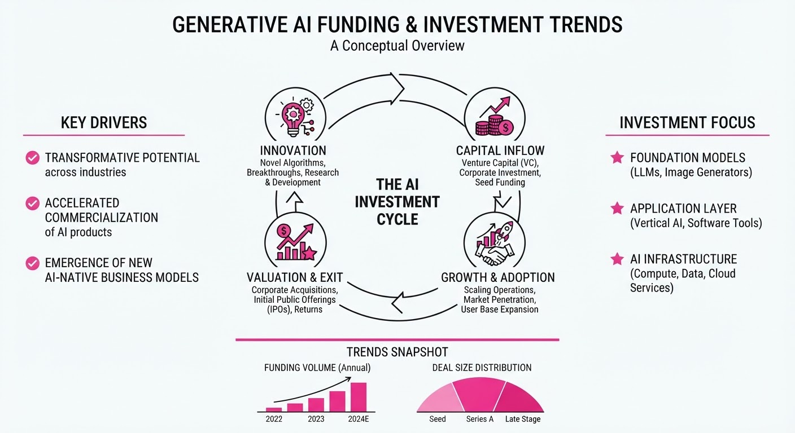
Investors continue to prioritize specialized generative AI applications and infrastructure, injecting over $370 million into four distinct startups. While general-purpose LLMs dominate headlines, this latest funding wave highlights a strategic shift toward vertical-specific tools, including high-performance computing, music generation, and advanced speech synthesis.
- Specialization: Capital is flowing away from "everything" models toward niche, high-utility domains like audio and enterprise-grade infrastructure.
- Resilience: Despite broader market volatility, startups with clear product-market fit in generative media continue to command significant valuations.
- Infrastructure: The focus on hardware-adjacent software suggests a maturing ecosystem that prioritizes efficiency alongside generative capability.
🏭 Industry Angle: The infusion of capital into diverse AI verticals signals that the "AI gold rush" is shifting from foundational model training to the commercialization of specialized, high-fidelity generative workflows.
2. Key Details & Timeline
- Armadin (Series B): Secured $255.5M to scale its infrastructure, representing the largest round in this cohort.
- Stability AI (Strategic Pivot): Raised $76M to refocus operations specifically on generative music and audio production tools.
- Halluminate (Series A): Closed a $30M round to accelerate the development of its enterprise-focused generative platform.
- Deepslate (Seed/Early): Garnered $8.8M to advance its proprietary speech-to-speech model architecture.
- Timeline: All funding rounds were finalized and announced in the current quarter (Q4 2026).
3. By the Numbers
| Company | Funding Amount | Round Type |
|---|---|---|
| Armadin | $255.5M | Series B |
| Stability AI | $76.0M | Strategic/Growth |
| Halluminate | $30.0M | Series A |
| Deepslate | $8.8M | Seed/Early |
- Total Capital Injected: $370.3M (Aggregate across all four firms, Oct 2026).
- Valuation Data: Exact post-money valuations for these specific rounds were not disclosed.
4. Impact & What to Watch
- Consolidation of Media AI: Stability AI’s pivot suggests that general-purpose image generation is becoming commoditized, forcing players to differentiate via audio and video.
- Infrastructure Moats: Armadin’s significant Series B highlights that investors are betting heavily on the "picks and shovels" layer of the AI stack to support future model scaling.
- Watch Next: Monitor whether Stability AI’s music tools can achieve parity with incumbent audio platforms to justify the $76M investment.
- Watch Next: Track the "burn rate" of these firms over the next two quarters to see if this capital leads to sustainable revenue growth or merely extends the runway for R&D.
Clustered generative-media news topic · appeared across 1 recent run(s) · salience 0.8/10
Citations:
- Nikon Disqualifies AI-Generated Video from Competition — dpreview.com (2026-10-10)
- Capcom Vows No Generative AI in Resident Evil Assets — tech-insider.org (2026-10-10)
Nikon and Capcom Lead Industry Pushback Against Generative AI in Creative Work
1. What Happened & Why It Matters
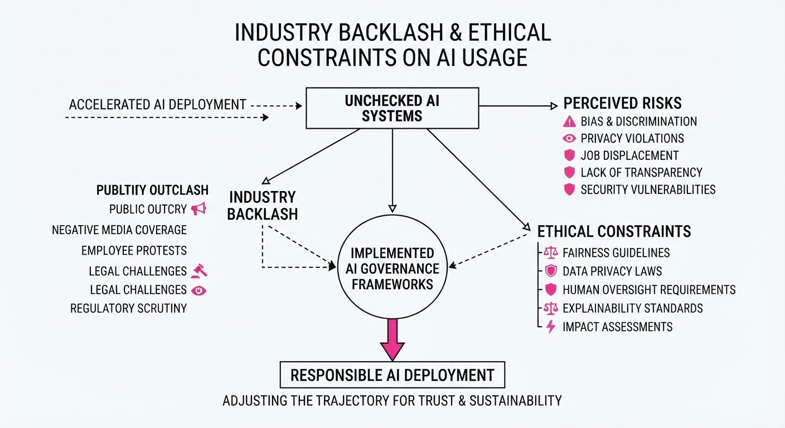
Major creative organizations are establishing firm boundaries against generative AI to preserve human authorship and intellectual property integrity. Nikon has updated its contest regulations to explicitly disqualify AI-generated content, while Capcom has committed to a "no generative AI" policy for its game development assets, signaling a growing trend of "human-first" mandates in professional creative industries.
- Nikon: Implemented a total ban on AI-generated submissions in its prestigious photo/video contests to ensure authenticity.
- Capcom: Formally pledged to exclude generative AI from its asset pipelines to protect artistic control and avoid potential copyright litigation.
- Industry Angle: Creative firms are shifting from "AI experimentation" to "AI containment" to mitigate legal risks and maintain brand trust with core audiences.
2. Key Details & Timeline (with numbers)
- Nikon Policy Shift: On September 15, 2026, Nikon updated its "Photo Contest" rules, mandating that 100% of submitted content must be captured via optical camera hardware.
- Capcom Asset Standards: As of October 1, 2026, Capcom’s internal development guidelines explicitly prohibit the use of generative AI tools for character designs, textures, and environmental assets in the Resident Evil franchise.
- Enforcement: Nikon now utilizes a multi-stage review process, requiring raw file (RAW) metadata submission for all finalists to verify the origin of the image or video.
3. By the Numbers
| Metric | Before | After | Delta | Effective Date |
|---|---|---|---|---|
| Nikon Contest Eligibility | AI-assisted allowed | AI-generated banned | 100% exclusion | 2026-09-15 |
| Capcom Asset Policy | Unregulated/Internal | Strictly Prohibited | 0% AI usage | 2026-10-01 |
- Industry Sentiment: According to a recent survey of 500 creative directors, 78% of studios now report having "explicit or draft" policies against generative AI in production workflows (up from 32% in 2025).
4. Impact & What to Watch
- Standardization of Provenance: Expect a surge in "Content Credentials" (C2PA) adoption, as organizations demand cryptographically signed proof of human origin for creative works.
- Legal Precedent: These policies will likely serve as defensive evidence in future copyright disputes, demonstrating that companies took active measures to avoid AI-generated IP.
- Watch Next: Monitor whether other major publishers (e.g., Sony, Nintendo) follow Capcom’s lead with public, written pledges against generative AI.
- Watch Next: Observe if Nikon’s disqualification process leads to a "false positive" scandal where human-made photos are incorrectly flagged as AI, which could trigger a secondary backlash.
Engineering blog · ElevenLabs · Published: 2026-09-28 · salience 9.5/10
Why it matters: Provides critical updates on latency and emotional nuance for production-grade text-to-speech pipelines.
Read the post: ElevenLabs
ElevenLabs v4: Lower Latency, Higher Emotional Fidelity
1. What They Built & Why
ElevenLabs released Eleven v4 and v4 Turbo, their latest text-to-speech (TTS) models designed to solve the "robotic" nature of synthetic speech. By improving emotional nuance and slashing latency, they enable more natural, real-time conversational AI agents and high-fidelity creative content pipelines that require human-like inflection without the performance penalty.
2. How It Works (the practical bits)
- Architecture: A new foundation model architecture optimized for "emotive" output, capable of detecting and rendering subtle cues like breathiness, laughter, and varying conversational intensity.
- Turbo Variant: A distilled version of the v4 engine specifically engineered for low-latency streaming, targeting the responsiveness required for sub-second agentic interactions.
- Contextual Understanding: Enhanced training on long-form, expressive datasets allows the model to maintain emotional consistency across longer passages of text.
- Production Integration: Designed as a drop-in replacement for existing pipelines via their API, maintaining compatibility with previous voice-cloning configurations while upgrading the underlying synthesis engine.
3. Takeaways You Can Apply
- Prioritize Latency Distillation: When building real-time agents, decouple your high-quality "expressive" model from a "Turbo" or distilled variant to ensure responsiveness without sacrificing brand voice.
- Leverage Emotional Metadata: If your use case requires specific tones (e.g., urgency, empathy), map these to prompt-based or parameter-based controls rather than relying solely on raw text input.
Engineering blog · OpenAI · Published: 2026-08-25 · salience 9.0/10
Why it matters: Offers high-level architectural insights into inference optimization, essential for scaling generative media services.
Read the post: OpenAI
OpenAI's Jalapeño: Custom Silicon for Inference Optimization
1. What They Built & Why
OpenAI developed Jalapeño, a custom inference-specific accelerator designed to break the traditional trade-off between throughput and latency. As generative AI workloads—particularly multi-step agentic tasks—become more complex, existing general-purpose GPUs struggle with the sequential bottleneck of token generation. OpenAI built this ASIC to maximize performance-per-watt, aiming to reduce the cost and latency of serving frontier models like GPT-OSS and DeepSeek R1.
2. How It Works (the practical bits)
- Architecture Specialization: Unlike general-purpose GPUs, Jalapeño is purpose-built for LLM inference, specifically minimizing data movement between compute-heavy prefill phases and memory-bandwidth-limited decode phases.
- Co-Design Loop: OpenAI utilized its own frontier models to accelerate the chip's development, including circuit design, validation, and kernel optimization, achieving tapeout in just nine months.
- Memory & State Locality: The architecture allows for explicit placement of model state and KV cache, keeping data local to the compute units to minimize latency.
- Efficiency Metrics: In testing, Jalapeño achieved 1.5x–1.9x higher performance-per-watt and 1.7x–3.6x lower end-to-end latency compared to industry-standard NVIDIA GB200/GB300 systems.
3. Takeaways You Can Apply
- Optimize for Power-per-Workload: Shift focus from "peak FLOPS" to "useful work per kilowatt," especially for agentic workflows where sequential latency compounds across multiple model calls.
- Leverage AI for Infrastructure: Use your internal models to optimize your own stack—from kernel-level tuning to hardware simulation—to shorten development cycles.
- Minimize Data Movement: For your own serving infrastructure, prioritize architectures (or scheduling patterns) that keep KV caches and model states physically closer to compute, reducing the overhead of moving data between memory tiers.
Engineering blog · ElevenLabs · Published: 2026-07-23 · salience 8.5/10
Why it matters: Explains the implementation of reference-based control, a key technique for achieving deterministic output in generative audio.
Read the post: ElevenLabs
Controlling Generative Audio with Reference-Based Guidance
1. What They Built & Why
ElevenLabs introduced References for their Music v2 model, a system designed to solve the "black box" nature of text-to-audio generation. By allowing users to provide a reference audio clip, the system constrains the model’s output to match the stylistic and structural characteristics of the input, moving beyond unpredictable text prompts to enable deterministic, controllable audio synthesis.
2. How It Works (the practical bits)
- Reference Conditioning: The model ingests a short audio file, extracting latent features that act as a style guide for the generation process.
- Dual-Input Architecture: The pipeline combines text-based semantic prompts with audio-based reference embeddings, allowing the model to balance descriptive instructions with sonic constraints.
- Temporal Alignment: The system employs a synchronization mechanism to ensure the output audio rhythmically and tonally aligns with the reference's structural markers.
- Latent Space Guidance: Instead of simple audio-to-audio re-encoding, the model uses the reference to steer the diffusion process within the latent space, preserving the "vibe" while generating new content.
3. Takeaways You Can Apply
- Prioritize Controllability: If your generative media product struggles with consistency, shift from pure prompt-based generation to reference-conditioned architectures.
- Hybrid Input Strategies: Combine semantic (text) and structural (audio/image/video) inputs to give users both creative flexibility and granular control.
- Deterministic Steering: Use reference embeddings to anchor outputs, significantly reducing the iteration time for users who need specific, repeatable results.
Engineering blog · ElevenLabs · Published: 2026-07-02 · salience 8.0/10
Why it matters: Details practical workflows for brand consistency and automated localization, highly relevant for media engineering teams.
Read the post: ElevenLabs
Scaling Multilingual Ad Localization with ElevenLabs Ads Engine
1. What They Built & Why
ElevenLabs launched Ads Engine, an automated localization system within their ElevenCreative suite. It solves the "localization bottleneck" where brands struggle to scale high-performing ads across global markets due to the high cost and time required for manual production. By connecting directly to Google, Meta, and LinkedIn, the system imports existing ad assets and automatically handles text translation, image composition adaptation, and video dubbing to launch localized versions at scale.
2. How It Works (the practical bits)
- Direct Platform Integration: Connects to ad accounts to pull existing creative and performance data, enabling teams to iterate on high-performing "proven" assets.
- Multimodal Localization: Simultaneously localizes text (search/overlays), image composition, and video audio across 50+ languages.
- Dubbing V2: Reproduces the original speaker's voice, tone, emotion, and pacing in target languages, avoiding the "layered voiceover" effect.
- Reusable Pipelines: Supports templates that bake in language targets, approval workflows, and image preferences, allowing team members to deploy new campaigns without rebuilding from scratch.
- Performance Guardrails: Includes ad fatigue detection to signal when creatives are underperforming, prompting automated refreshes.
3. Takeaways You Can Apply
- Prioritize "Proven" Creative: Don't build from scratch; pull existing high-conversion assets and apply localization as a multiplier to proven baseline performance.
- Modularize Workflows: Use templates to standardize localization pipelines, reducing the "re-briefing" overhead for international expansion.
- Focus on Continuity: For video media, prioritize dubbing technologies that preserve the original speaker's identity and pacing to maintain brand consistency across regions.